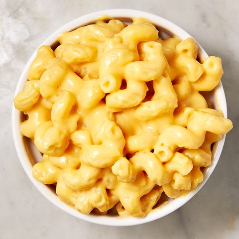

Mac & Cheese
An old southern favorite.

Description
A paragraph about the meal.
Ingredients
Ingredient
Another ingredient
Yet another ingredient
One more, for good measure.
Directions
First step
Second
Third
Fourth
And beyond